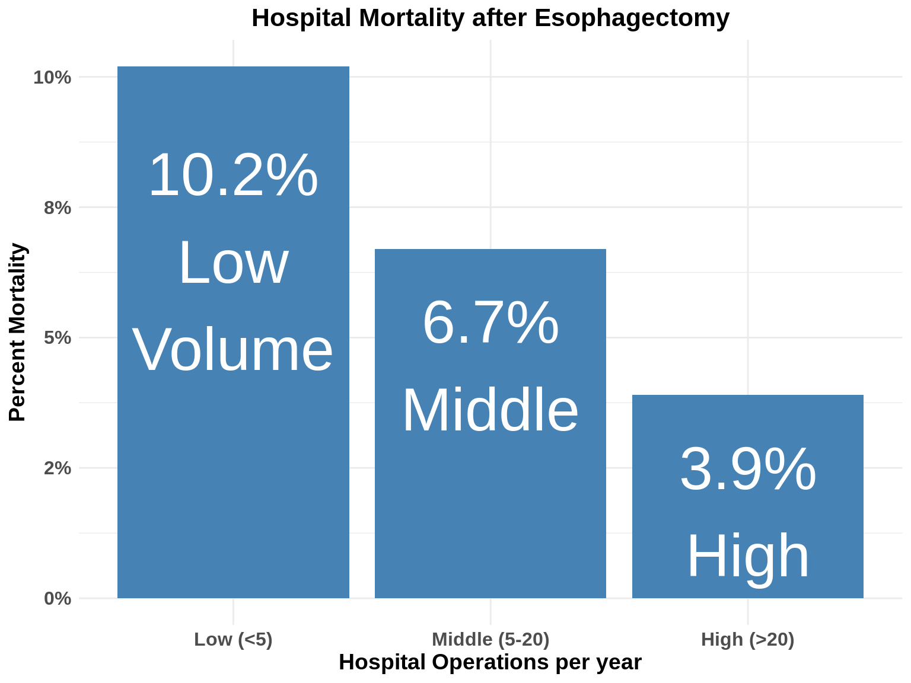
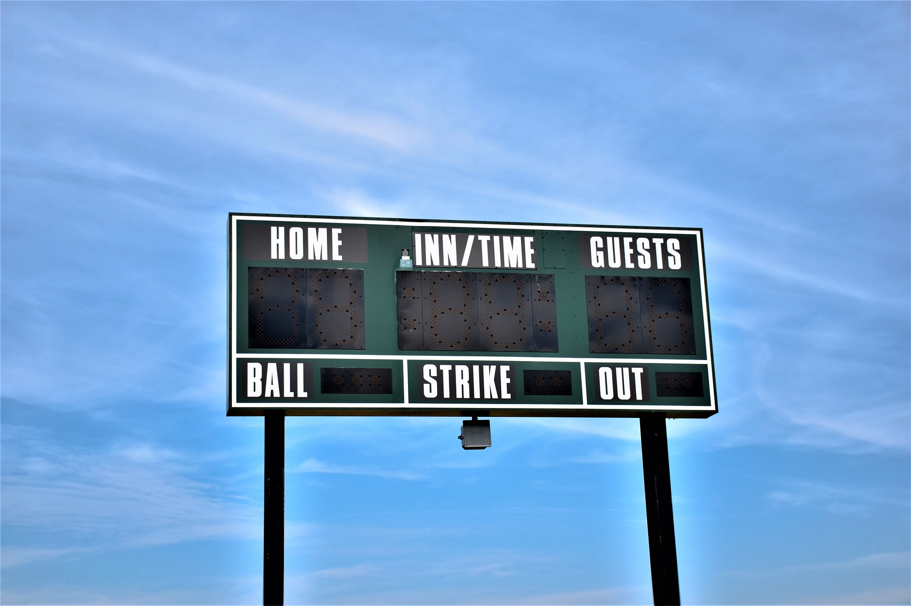
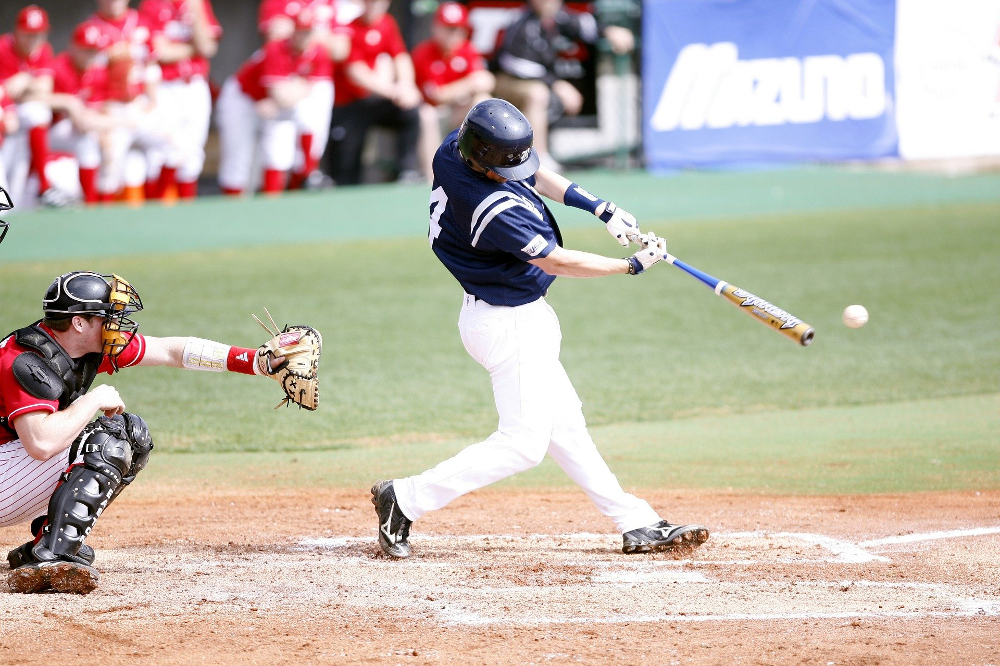
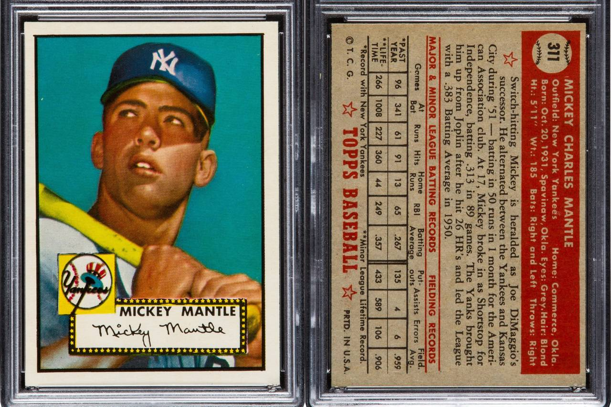
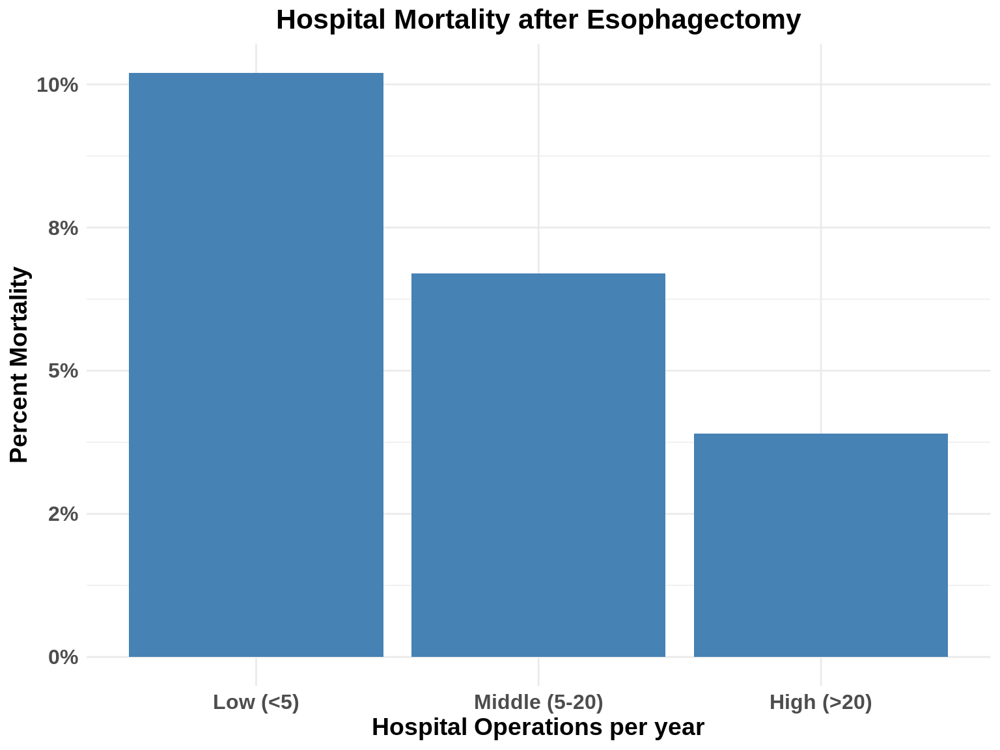

Your Surgery Team
I’m Dr Jonathan Salo, I’m a GI Cancer Surgeon.
.font60[If you’re seeing this video, it’s likely because you or someone you know as had a recent diagnosis of esophageal cancer.]
This video is designed to help you choose a surgeon and hospital for your esophagectomy surgery.
When it comes to surgery for esophageal cancer, we’re all interested in getting the best outcome possible. The goals of any operation are rapid recovery, being able to return to activities, and a low risk of complications.
Esophageal surgery is a substantial operation, so it’s even more important to increase the chances of a good outcome.
There are several factors which can change the odds of a good outcome:
Patient factors
Hospital and the Surgeon
Patient factors
If you haven’t do so already, please watch our video on Esophageal Surgery. There’s a link above and one in the description below
In that video, we talk about the importance of muscle strength and nutrition for a a good outcome after esophageal surgery.
The good news is that with proper nutrition and exercise, you can increase your muscle strength and reduce your chances of complications after surgery. I’ll have a link to a video that shows you what you as a patient can do to improve your chances of a good outcome after esophageal surgery.
In this video, we’ll talk about the impact of the hospital and the surgeon on outcomes after surgery.
Understanding Outcomes
We’re going to start by talking about outcomes after surgery and how statistics can help you make decisions about your surgery. Let’s talk Baseball for a minute.
Baseball
If you go to a baseball game and want to know how a team is doing, you look at the scoreboard

Baseball
If you want to evaluate an individual baseball player, or you want to compare one baseball player to another, you want to know more than just how they did in one game: you would look at their batting average

Baseball
Micky Mantle is regarded as one of baseball’s greatest players, and this baseball card from 1952 is one of the most valuable in history

If you look at the back of his card, you’ll find lots of statistics, including his … batting average
The batting average allows fans to compare players. A player with a high batting average may not hit a home run every time, but a player with a high batting average is certainly going to help win more games. The batting average won’t absolutely predict what will happen with every time a player goes to bat, but it shows an average over the season or over a career.
Something which the batting average doesn’t show, however, is the difficulty level of the games. One can assume that in the major leagues the competitions is pretty high.
We can imagine that any given batter is going to have a lower batting average against a top notch pitcher like Sandy Kofax, than against a little league pitcher
!!! Photo of Sandy Kofax!!! !!! Photo of Little League Pitcher!!!
When you choose a surgeon or a hospital for your cancer surgery, you want to find the best chance of success. You want to make sure you have the best players on the field, and you want to maximize your chances of winning.
Unfortunately, there aren’t baseball cards for hospitals and surgeons, and finding the statistics for a hospital or surgeon can be a challenge, but it’s still important that you have all the information you need to make a good decision.
Hospital Volume
Practice makes perfect in many things in life, and esophageal surgery is no exception.
Hospitals where an esophagectomy is performed more frequently in general have better outcomes than hospitals where the operation is only occasionally done.
This chart shows the relationship between hospital volume and the risk of death after esophagectomy.
The risk of death after esophagectomy is about twice as high in hospitals which perform less than 5 esophagectomy operations per year.

The easiest way to find out whether a hospital is high volume or low volume is to ask your surgeon.
You could also check the internet. The Leapfrog Group is a non-profit organization that collects and publishes safety information healthcare. Their website ranks hospitals for safety and can help you find a high-volume hospital.
You can find a link to the Leapfrog website in the description: HospitalSafetyGrade.org
You can search on a hospital. Once there, you can click “View this hospital’s leapfrog Hospital Survey Results”
Of course there are low-volume hospital that have good outcomes, but starting with a high-volume hospital is a place to start.
Choosing a Surgeon
The surgeon is another key factor in the outcome of an operation. The Leapfrog recommends a minimum of seven operations per year for surgeons undertaking esophagectomy.
Your Surgeon’s Outcomes
Knowing your hospital’s outcomes is important, but knowing your surgeon’s outcomes is equally important. Your surgeon should be able to tell you what their statistics are for outcomes like anastomotic leak, pneumonia, and death after surgery.
If you surgeon doesn’t know their personal statistics for performing an esophagectomy, you may want to consider a second opinion. After all, if you met a professional baseball player, you would expect that they would be familiar with their batting average.
Risk assessment
As we discuss in the video on esophagectomy surgery, the patient’s overall health, particularly their muscle strength, is an important factor in predicting the risk of complications after surgery.
If you haven’t done so already, I would recommend watching our video on esophageal surgery. There’s a link in the description below
When you meet with your surgeon, part of the consultation will be a preoperative evaluation of your overall health and your personal risk of complications after surgery.
As part of the preoperative evaluation, your surgeon may order additional tests such or consultations, especially to evaluate the health of your heart or lungs.
Questions for Your Surgeon
How many esophagectomy operations are performed each year in your hospital?
How many esophagectomy operations do you perform personally each year?
- What are your overall rates of complications?
- Pneumonia
- Anastomotic Leak
- Death in the first 90 days after surgery
What sort of testing of my overall health will be needed before surgery?
what would you estimate my risk of complications based upon your evaluation?
In addition to choosing a hospital and a surgeon wisely, it is important to recognize that you can improve your chances of a good outcome after surgery by working to increase your fitness through a combination of smoking cessation, nutrition, and exercise. The following videos may be helpful:
[Exercise] [Nutrition]
We hope you have found this video helpful. This videos and others like it are designed to
educate patients and families about esophageal cancer
and equip them for their discussions with their esophageal cancer care team.
As always, these videos are no substitute for expert medical advice.
Feel free to leave a comment or a question, or if you have suggestions for future videos.
Link Back to Nutrition and Exercise